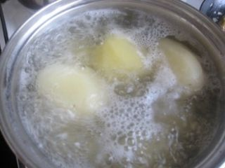
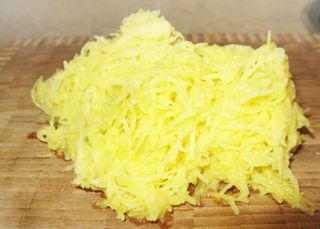
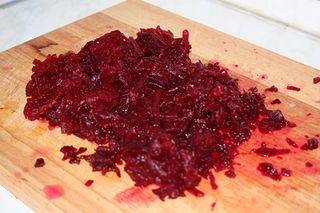
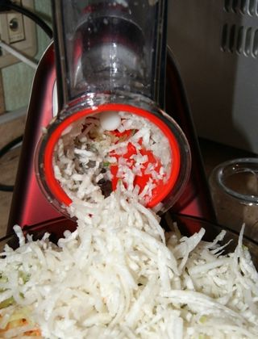
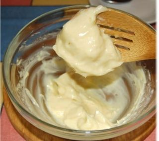

Шаг 1: Подготовим ингредиенты.

Первым делом необходимо отварить картофель. Перед этим моем его в холодной воде, чистим от кожуры. Варим до полного приготовления, проверить можно, если картофель будет хорошо протыкаться зубочисткой.

Натираем его на крупной тёрке в тарелку и откладываем в сторону.

Потом ставим в эту же воду свеклу и варим её. Варить необходимо долго, чтобы она хорошо проварилась и была готова к употреблению.Потом остужаем, чистим и натираем так же на крупную тёрку. Моем куриные яйца и варим в воде минут 8-10, они должны быть сварены «вкрутую». Очищаем от скорлупы и натираем на тёрку, можем мелко порубить. Репчатый лук очищаем от шелухи и промываем, потом его мелко режем. Для большего вкуса в салате лук можно замариновать, для этого его опускаем в стакан с разведённым уксусом и водой. Пусть постоит с полчаса, он так потеряет горечь.

Редьку обязательно хорошенько вымыть и почистить от шкурки. Натираем её на самую мелкую тёрку. Какая бы она не была горькая, есть один секрет в этом салате, как мы уберём горечь. Об этом позднее. Морковь очищаем, промываем и натираем на среднюю тёрку.
Шаг 2: Выкладываем салат слоями.

На дно салатника выкладываем отварной картофель, немного присаливаем и смазываем майонезом. Далее берём репчатый лук и выкладываем следующий слой из него. Сразу на лук выкладываем слой редьки тёртой и смазываем сметаной. Вот он наш секрет. Сметана уберёт горечь и придаст редьке неповторимый аромат. На следующий слой берём морковь и аккуратно выкладываем поверх редьки и сметаны. Присаливаем крупной солью, но совсем немного. Далее яблоко, его натираем или на тёрку чищенным или можно прямо с кожурой. Кому как нравится, если вас не будет беспокоить его твердоватая кожица. Немного прижать и смазать майонезом. Очередь свеклы: её мы так же выкладываем, солим и промазываем майонезом. Последний штрих – это куриные яйца, выложили на слой свеклы, смазали майонезом. Всё салат готов.